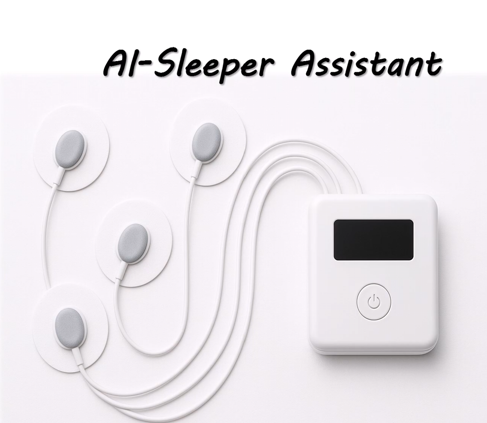

Hello! I am currently a senior student at National Taiwan University majoring in Biomedical Engineering, advised by Dr. Kevin T. Chen in the Multimodal Medical Imaging Optimization Lab.
My research interests lies in computer vision and deep learning for healthcare, with a focus on segmentation, classification, and multimodal fusion for medical image analysis. I am especially interested in developing data- and compute-efficient training strategies that enable robust performance under limited annotation or computing resource constraints for various tasks.
I'm currently working on anatomy-aware low-dose to full-dose PET reconstruction. Since Alzheimer's disease patients' PET scans lack strong anatomical boundaries especially in low-dose scenarios, I'm integrating MRI-based structural context so the model can preserve regions like the hippocampus and medial temporal lobe during full-dose image generation!

Keywords: Medical image analysis, Segmentation, Computer Vision, Probabilistic Modeling, Low-resource training methods
Research

|
PAULow: A Low-Resource Training Strategy for Cell Segmentation using Patch-Based Attention U-Net
Kai-Lin Chen, Yu-Nong Lin, Pen-Hsiu Grace Chao, Kevin T. Chen MIDL 2025 Paper / OpenReview / Poster / Code We propose an offline training pipeline requiring only tens of samples with patch-based preprocessing, Attention U-Net, and a Dynamic loss function selection strategy. Our method improves image segmentation performance by 32.60% and 35.62% over Stardist and Cellpose, respectively, using the same amount of training samples without the need of large-scale pre-training. |


|
FICM: Force Informed Cell Map Image Synthesis using Attention-gated Dual Encoder U-Net for Carcinoma Cell Line Classification
Kai-Lin Chen, Chun-Pei Shih, You-Jhu Huang, Di-Yen Chueh, Xiao-Fang Tang, Peilin Chen RCAS Summer Internship Seminar, Academia Sinica, 2025 (2nd place in the division of Intelligence Bioengineering Group.) Poster / Flashtalk Presentation / Code & Project Description We propose a new deep learning-based medical image modality combining cellular morphology (fluorescence) and internal force gradients. Our fusion modality is able to enhance adenocarcinoma cell lines (HCC827 & A549) classification accuracy by 37.67% compared to unprocessed modalities. |

|
Unsupervised Segmentation of Pathology Images using Haralick Features
Kai-Lin Chen, Cheng-Yang Yu Fundamentals of Biomedical Image Processing DBME5018, 2024 Fall Project Proposal / Project Presentation / Final Report Used Haralick texture features to cluster/segment pathology images without labeled data, enabling adaptive multi-class segmentation by inferring the number of clusters with inertia. This approach accelerates diagnostic workflows and offers a scalable solution for clinical labeling in resource-limited settings. |
|
|
Brain Tumor Segmentation from MRI using Patch-Based Attention U-Net for Data-Efficient
Learning
Kai-Lin Chen, Cheng-Yang Yu, Kevin T. Chen Medical Image Analysis DBME5030, 2025 Spring Final Presentation Adapted PAULow's segmentation pipeline to the BraTS brain tumor dataset, maintaining low-resource and data-efficient training strategies. Demonstrated higher performance over other U-Net structures under both standard and limited data conditions (30 vs. 300 cases). |
|
|
Finetuning Existing Models Trained using PAULow for better Generalization Across Different Microscopy Instruments
Kai-Lin Chen, Pen-Hsiu Grace Chao, Kevin T. Chen Presentation / Code We propose an offline model finetuning pipeline (integrated within PAULow) that enabled model generalization accross different microscopy instruments after the model is trained by freezing half of the layers, making it more robust accross different imaging instruments and environments for various segmentation tasks. |
Other Projects
|

|
AI Sleeper Assistant: Pitching a Hypothetical Medical Device
Kai-Lin Chen, Yu-Lin Chu, Yin-Hsi Li, Tzu-Yu Huang, Chai-Ching Lin Medical Device Innovation and Design DBME3002, 2025 Fall (Best Video Advertisement in class.) Presentation / Advertisement Video Collaborated with peers to pitch a hypothetical medical device that is able to analyze brain waves and apply micro-currents to adjust brain waves into sleeping frequencies with sleeping cycle analyses and alerting system. |
|
|
Is Buying a Coffee Machine Worth It? A Case Study in MMIO Lab.
Kai-Lin Chen. Weekly MMIO Lab Meeing, March 1st 2025 Presentation Slides A case study of finding whether buying a family-sized coffee machine is better than other methods of caffiene purchases (convienence stores, starbucks...etc). Presented during lab meeting and raised about 1500 NTD (50 USD) from lab members to buy a communal coffee machine that costs 2250 NTD (about 72 USD). |